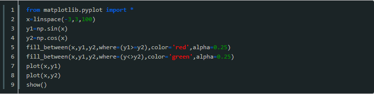
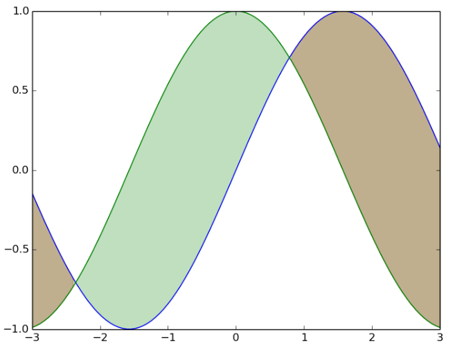
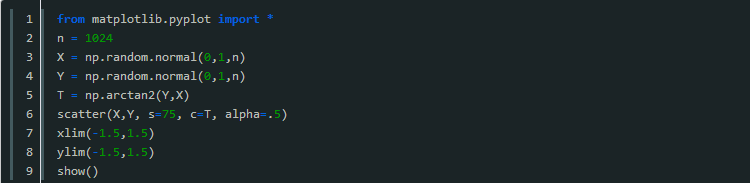
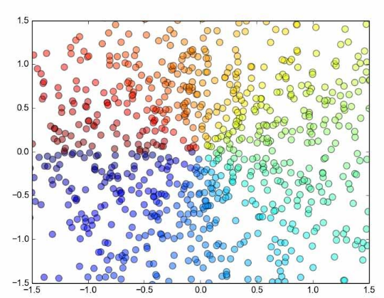
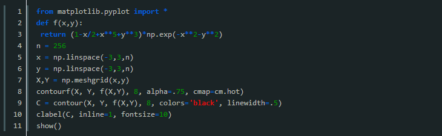
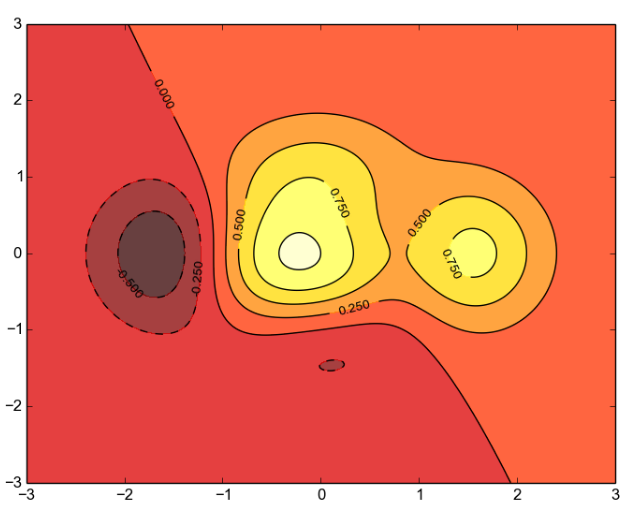

前言：
matplotlib 是Python最著名的绘图库，它提供了一整套和matlab相似的命令API，十分适合交互式地进行制图。本文将以例子的形式分析matplot中支持的，分析中常用的几种图。其中包括填充图、散点图(scatter plots)、. 条形图(bar plots)、等高线图(contour plots)、 点阵图和３Ｄ图，下面来一起看看详细的介绍：
一、填充图
参考代码

简要分析
这里主要是用到了fill_between函数。这个函数很好理解，就是传入x轴的数组和需要填充的两个y轴数组；然后传入填充的范围，用where=来确定填充的区域；最后可以加上填充颜色啦，透明度之类修饰的参数。
效果图

二、散点图(scatter plots)
参考代码

简要分析
1.首先介绍一下numpy 的normal函数，很明显，这是生成正态分布的函数。这个函数接受三个参数，分别表示正态分布的平均值，标准差，还有就是生成数组的长度。很好记。
2.然后是arctan2函数，这个函数接受两个参数，分别表示y数组和x数组，然后返回对应的arctan(y/x)的值，结果是弧度制。
3.接下来用到了绘制散点图的scatter方法，首先当然是传入x和y数组，接着s参数表示scale，即散点的大小；c参数表示color，我给他传的是根据角度划分的一个数组，对应的就是每一个点的颜色（虽然不知道是怎么对应的，不过好像是一个根据数组内其他元素进行的相对的转换，这里不重要了，反正相同的颜色赋一样的值就好了）；最后是alpha参数，表示点的透明度。scatter函数的高级用法可以参见官方文档scatter函数或者help文档，最后设置下坐标范围就好了。
效果图

三、等高线图(contour plots)
参考代码

简要分析
1.首先要明确等高线图是一个三维立体图，所以我们要建立一个二元函数f，值由两个参数控制，(注意，这两个参数都应该是矩阵)。
2.然后我们需要用numpy的meshgrid函数生成一个三维网格，即，x轴由第一个参数指定，y轴由第二个参数指定。并返回两个增维后的矩阵，今后就用这两个矩阵来生成图像。
3.接着就用到coutourf函数了，所谓contourf，大概就是contour fill的意思吧，只填充，不描边；这个函数主要是接受三个参数，分别是之前生成的x、y矩阵和函数值；接着是一个整数，大概就是表示等高线的密度了，有默认值；然后就是透明度和配色问题了，cmap的配色方案这里不多研究。
4.随后就是contour函数了，很明显，这个函数是用来描线的。用法可以类似的推出来，不解释了，需要注意的是他返回一个对象，这个对象一般要保留下来个供后续的加工细化。
5.最后就是用clabel函数来在等高线图上表示高度了，传入之前的那个contour对象；然后是inline属性，这个表示是否清除数字下面的那条线，为了美观当然是清除了，而且默认的也是1；再就是指定线的宽度了。
效果图

是不是很好玩呢？还想看更多精彩吗？
请移步此网页：https://www.php.cn/python-tutorials-362064.html
获取更多精彩吧！！！